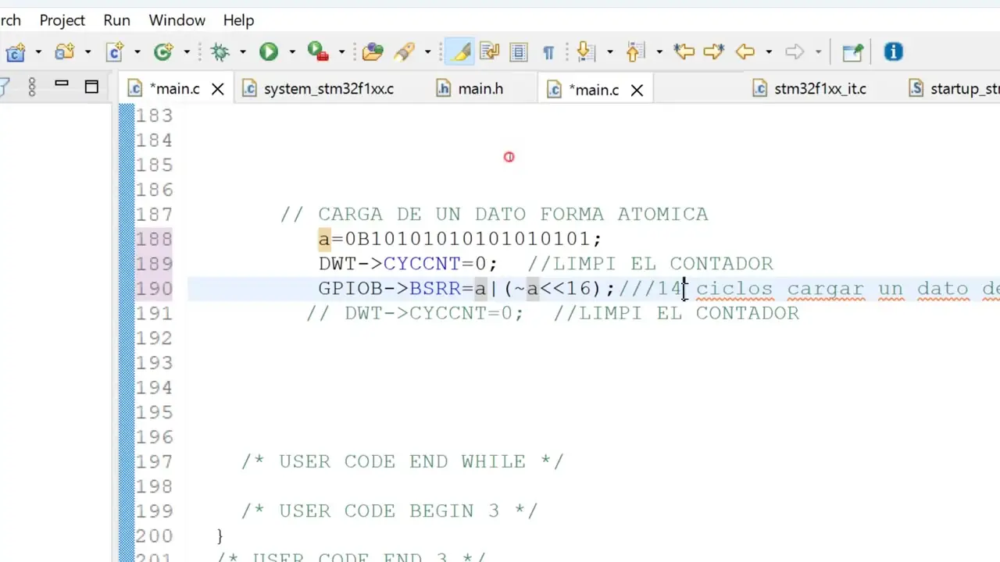
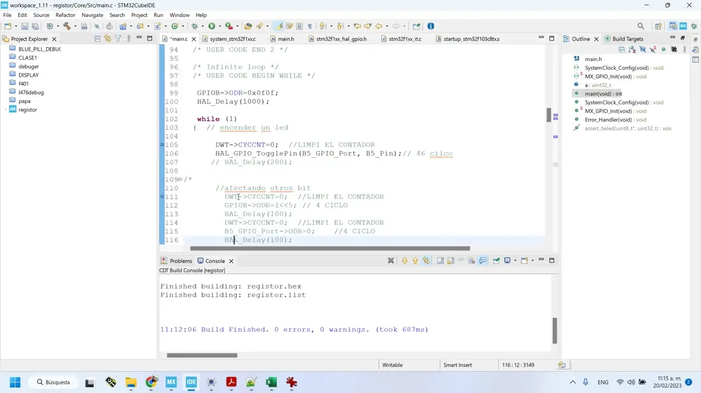
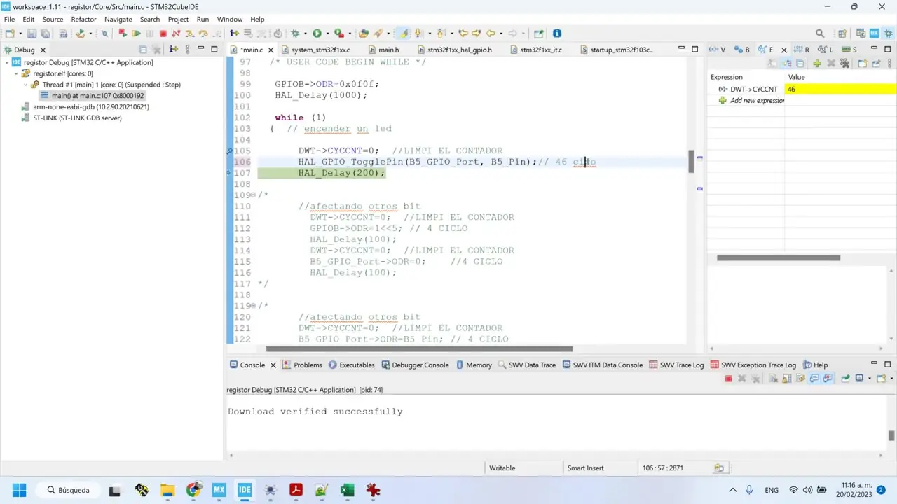
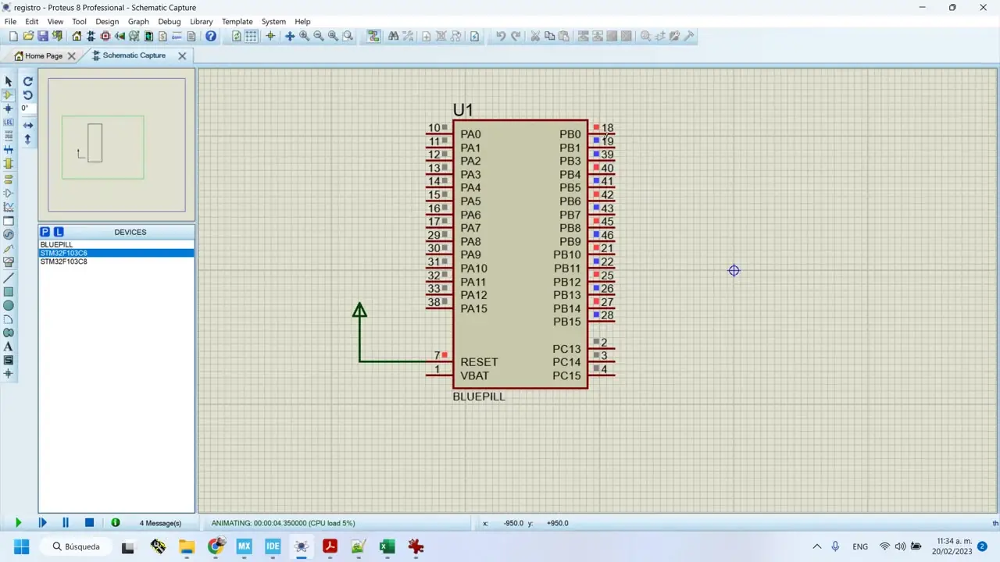

En CubeMX pon todo el puerto B como GPIO_Output (con etiquetas B5_..., B15_..., etc.) y SYS → Debug en Serial Wire. El reloj se dejó en 8 MHz para simular también en Proteus.
PB2 existe en el micro pero la Blue Pill no lo saca a un pin (es BOOT1).
Aplicamos en la Blue Pill (puerto B como salida) las máscaras AND, OR y XOR que vimos en teoría, y medimos cuánto tarda cada forma con el contador de ciclos DWT (Data Watchpoint and Trace) de los Cortex-M3 en adelante, usando el debugger de STM32CubeIDE. Comparamos HAL, escribir en ODR y el acceso atómico con BSRR/BRR, que cambia solo el bit que interesa y no tiene problemas con interrupciones.

En CubeMX pon todo el puerto B como GPIO_Output (con etiquetas B5_..., B15_..., etc.) y SYS → Debug en Serial Wire. El reloj se dejó en 8 MHz para simular también en Proteus.
PB2 existe en el micro pero la Blue Pill no lo saca a un pin (es BOOT1).
GPIOB->ODR = 0x0f0f; // 4 encendidos, 4 apagados...
HAL_Delay(1000);Los Cortex-M3 y superiores tienen el bloque de traza DWT con un contador de ciclos de reloj (CYCCNT). Se activa una vez en USER CODE BEGIN 2. Funciona aun en placas clon.
// ACTIVO EL CONTADOR PARA DEBUGGER
CoreDebug->DEMCR |= CoreDebug_DEMCR_TRCENA_Msk;
DWT->CTRL |= DWT_CTRL_CYCCNTENA_Msk;DWT->CYCCNT = 0;DWT->CYCCNT y lee los ciclos.DWT->CYCCNT = 0; // limpio el contador
HAL_GPIO_TogglePin(B5_GPIO_Port, B5_Pin); // 46 ciclos
HAL_Delay(200);

Tiempo = ciclos / frecuencia. A 8 MHz, 46 ciclos son 5,75 µs solo para invertir un LED.
Es rápido pero "egoísta": cambia todos los demás pines. En vez de 1<<5 se puede usar B5_Pin o GPIO_PIN_5, que ya traen el desplazamiento (están definidos en stm32f1xx_hal_gpio.h).
GPIOB->ODR = 1<<5; // 4 ciclos, pero borra los demás pines
HAL_Delay(100);
B5_GPIO_Port->ODR = 0;
HAL_Delay(100);11 ciclos (1,4 µs): casi la quinta parte que con HAL. Sirve también para cualquier registro o variable.
GPIOB->ODR = GPIOB->ODR ^ B5_Pin; // 11 ciclos
// o: GPIOB->ODR ^= (1<<5);
HAL_Delay(200);Solo para puertos. BSRR: bits 0–15 (BS) ponen en 1; bits 16–31 (BR) ponen en 0. BRR: bits 0–15 ponen en 0. Escribir 0 no hace nada, así que solo cambia el pin indicado, en una sola instrucción y sin conflictos con interrupciones.
4 + 4 = 8 ciclos: 1 µs a 8 MHz. La forma más rápida de encender y apagar un pin.
GPIOB->BSRR = B5_Pin; // pone en 1 (4 ciclos)
HAL_Delay(100);
B5_GPIO_Port->BRR = B5_Pin; // pone en 0 (4 ciclos)
HAL_Delay(100);GPIOB->BSRR = B5_Pin; // pone en 1
HAL_Delay(100);
GPIOB->BSRR = B5_Pin << 16; // pone en 0
// igual a: GPIOB->BSRR = 1 << (5+16);
HAL_Delay(100);B15_GPIO_Port->BSRR = B15_Pin; // atómico (solo puertos)
GPIOB->ODR |= 1<<15; // OR: sirve para registros y variablesB11_GPIO_Port->BRR = B11_Pin; // atómico
GPIOB->ODR &= ~(1<<11); // AND con el negadoEn Proteus se ven a la vez: PB5 y PB14 parpadeando, PB15 en 1 y PB11 en 0, sin interferirse.
GPIOB->ODR ^= 1<<14;Con una sola escritura en BSRR: los unos del dato van a los bits de set y los ceros (dato negado) a los bits de reset (desplazado 16). Tarda 14 ciclos.
a = 0B1010101010101010;
GPIOB->BSRR = a | (~a << 16); // 14 ciclos